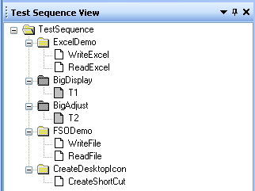
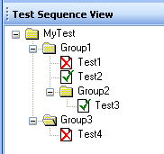
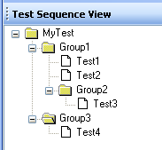

Test Sequence View Context Menu
The Test Sequence View context menu displays all allowed operations for the tree view and its nodes. To view the context menu, right-click on any node. The context menu will look similar to the following example:
Click on the following links for a detailed description of each menu item.
Creates a new group node as a child of the currently selected node. This menu item will be disabled if a test node is right-clicked because group nodes can only be added to the root node or other group nodes. See Adding a new group for more details.
Note: This function is disabled while a test is running.
Creates a new test node as a child of the currently selected node. This menu item will be disabled if a test node is right-clicked because test nodes can only be added to the root node or group nodes. See Adding a new test for more details.
Note: This function is disabled while a test is running.
Runs ONLY the currently selected node and its child nodes.
If a test node is selected, the PreTest method of the root node will first be executed, followed by the test node's method, and finally the PostTest method of the root node. If the test node is a child of a group node, the group's PreTest and PostTest methods will NOT be executed.
If a group node is selected, the PreTest method of the root node will first be executed, then the group node's PreTest method, then the methods of the group node's child nodes, followed by the group node's PostTest method, and finally the PostTest method of the root node.
Note: This function is disabled while a test is running.
Runs the entire test program. This performs the same operation as clicking the Start button in the IDE.
Note: This function is disabled while a test is running.
Adds or removes a breakpoint on the selected node. The keyboard shortcut for this operation is F9. When a node breakpoint is enabled and the test program is run in debug mode, the program will break at the first line of executable code in the node's VBScript method.
Toggles the enabled state of the node. All child nodes of the selected node are enabled or disabled as well. The keyboard shortcut for this operation is Ctrl+D. When a node is disabled, it is not executed when the test program is run and appears grayed out in the Test Sequence View.
 |
Group2 and its child, Test3, are disabled. |
Runs the selected node in a loop. Select the number of loop iterations from the submenu as shown below.

Note: This function is disabled while a test is running.
Runs ONLY the currently selected node and its child nodes in debug mode. The debugger will break at any breakpoints set in the executed code.
If a test node is selected, the PreTest method of the root node will first be executed, followed by the test node's method, and finally the PostTest method of the root node. If the test node is a child of a group node, the group's PreTest and PostTest methods will NOT be executed.
If a group node is selected, the PreTest method of the root node will first be executed, then the group node's PreTest method, then the methods of the group node's child nodes, followed by the group node's PostTest method, and finally the PostTest method of the root node.
Note: This function is disabled while a test is running.
Expands the entire Test Sequence View tree so that every node is visible (i.e., no nodes are collapsed).
If checked (default), the description for each group and test node is displayed in the tree view next to the node name.
Example:
| ShowNodeDescriptions = true | ShowNodeDescriptions = false |
 |
 |
Enables editing of the node name so that a new name may be entered. This does not affect the node's test method name, nor does it make any changes in the test script. The keyboard shortcut is F2.
Moves the cursor in the Script View to the beginning of the selected node's test method. If the node is the root node or a group node, the cursor will be at the beginning of the PreTest method. Double-clicking on the node in the Test Sequence View will have the same effect.
Toggles the visibility of the Properties Page window in the IDE.
Clears all the pass/fail flags from the previous test run from the nodes in the Test Sequence View.
Example:
| Before clearing nodes: | After clearing nodes: |
|  |  |
Resets the BreakOnFail property of ALL test nodes to false.
Deletes the selected test node or group node from the tree. The root node may not be deleted. This operation does not delete any VBScript code, so the deleted node's method(s) will still be present in the test script.
Note: This function is disabled while a test is running.
Enables the Hard Abort button in the IDE. Clicking this button will immediately kill the scripting engine when a test is running.
CAUTION: This button should ONLY be used as a last resort if the test cannot be stopped normally.

See Also
Test Sequence View | Node Drag-Drop
Astronics Test Systems
Last updated on 3/1/07 by L. Anhalt